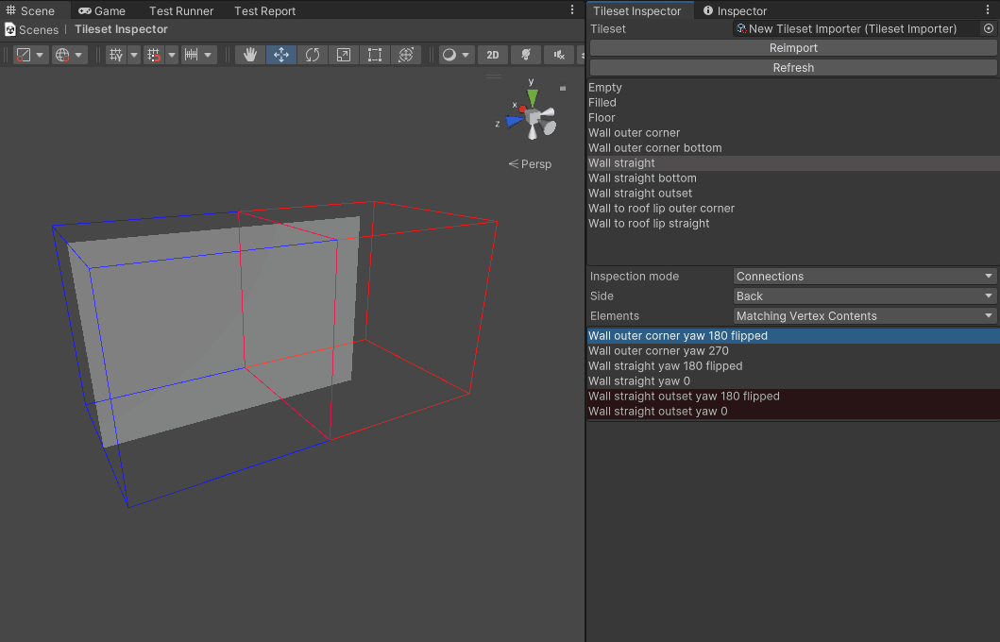

Connections
This mode shows all available neighbours in the lower list box in the editor window and displays a neighbour tile on the stage alongside the current tile. Clicking on a neighbour from the list will show the newly selected neighbour in the scene view. If the neighbour does not connect with the main module the Inspector will also show the issues that prevent the connection in the scene view.

The Elements dropdown box contains three options: Valid Only, Matching Vertex Contents, and All.
Valid Only only shows neighbours that match along the selected face.
Matching Vertex Contents shows all neighbours that share vertex inside-ness on the selected face.
The inspector shows the matching tiles in grey and mismatching tiles in red.
Selecting a red neighbour tile shows it on the stage, separated from the main tile. It will also indicate why Wildtile will not connect the tiles, whether it's mismatches between vertex positions, edges, normals, or materials.
All shows all tiles, even ones with conflicting tile-corner insideness, e.g. having a ground floor below another ground floor.
The inspector shows tiles that do not share vertex insideness in green.
If you spot a tile that should be connected amongst the green tiles, check the vertex contents of the current tile and the neighbour tile - Wildtile's importer has incorrectly interpreted one or the other. You must change the model or the import settings to fix it.
Which Problems Are Identified?
You should use this inspector if you're editing a map and spot a wildcard where you'd expect a module to be. The connected modules inspector will explain why Wildtile has rejected the placement.
It can also show why two modules are placed next to one another when they should not match up.

How To Use This Inspector To Solve The Problem?
When you spot a wildcard where you expect a module to be, double click on the module you expect to be placed there in the top module list. This will open the module inspection stage in the scene view.
I cannot find the module in the modules list
If the module is not in the modules list, it is likely that the tileset did not import successfully. Follow these steps to fix common issues:
Export the tileset model from your modelling software to the Unity assets folder.
Refresh the project. This is normally automatic, but you can press
ctrl+Rto force a Unity refreshOpen the Tileset Importer asset by double clicking on it in the Tileset Inspector
Navigate to the model you just exported from your modelling software. Drag it onto the Source Model field in the Tileset Importer.
Tip
You can keep the Tileset Importer asset open by clicking on the lock icon in the top right of the asset inspector
Click reimport on the Tileset Inspector
Check and read any error dialogs that appear during import
Check for errors in the Unity console. Errors should only appear here if there is an issue within Wildtile - please report these as bugs on Discord
Check the modules again for your intended module
If the module is still missing from the Tileset Importer there could be an issue in Wildtile. Please report this as a bug on Discord, including a zip of your model and your tileset importer asset.
Set the Inspection Mode to Connections, set the Elements to All, and set Side to any face. A red wire box will appear in the scene view next to the existing box. The red box may contain another model.
Tip
If you are adding similar models or fixing existing models, it may be easier to set Elements to Matching Vertex Contents. This will hide all results highlighted in green.
Adding tiles with new materials or editing the Tileset Importer asset may introduce tile insideness issues. Using Matching Vertex Contents in this case may hide modules that you are looking for.
The Connected Modules list will be filled with all modules in your tileset, including all rotations and mirrors.
Find the module in the Connected Modules list that you expect to be connected on the face pointing to the red box. This is likely to be the module that the GridPlacer has placed next to the wildcard. The module's background colour will indicate if Wildtile believes the two modules can connect.
If the module has a green highlight then the modules do not share corner-insideness, so Wildtile will not place one or both of the modules at your expected part of the map before even considering if they connect to one another. You can diagnose how Wildtile has calculated both modules' corner-insidenesses in the Vertex Contents inspection mode.

If the module has a red highlight then they have matching corner-insideness but Wildtile has analysed them to have different face edges. After clicking on a module in the connected module list it will appear in the scene view inside the red wire box, along with diagnostics explaining why the modules do not connect to one another.
Click here for information on how to use the connected module debugger in the scene view.
If the modules match (they are unhighlighted/grey in the connected module window) then those modules do not prohibit placement and will not introduce the wildcard. Check the other sides in turn and follow the same steps.
If all sides connect to your expected module, ensure those modules are the ones surrounding your wildcard.
Tip
You can find the name of the modules placed by the GridPlacer.
- In the Tileset Importer asset, set the Postprocessor Creator to
WildtileSimplePlacerPostprocessorCreator, which is included in the Wildtile package - In the GridPlacer component, check
Show Objects in Hierarchy - In the GridPlacer component, click the
Force Map Rebuildbutton
You can now see the objects in the hierarchy window, and can select them in the scene view by clicking on the tile twice (do not double click on the tile)
If the modules surrounding the wildcard are different to the modules you just checked, other modules do not connect to one another somewhere else in the map.
The best way to find the modules that do not match is to make smaller maps find a placement without wildcards, then iteratively make them larger and larger until wildcards appear. When the wildcards appear, you know that the unconnectable modules lie somewhere in the part of the map that was just added.
If the modules surrounding the wildcard are the modules that you expect and the wildcard remains, check if multiple modules in your tileset share the same name. If there are no modules with the same name, make one final pass of reimporting the tileset and forcing the GridPlacer to regenerate the map - if this still does not fix the issue then request help on Discord.